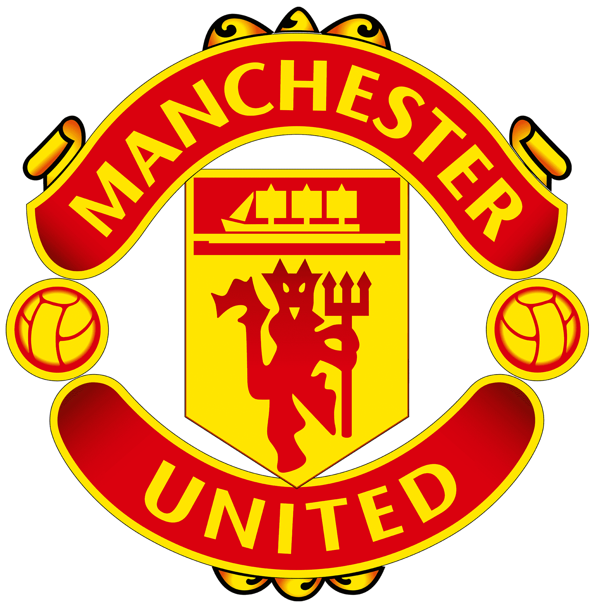
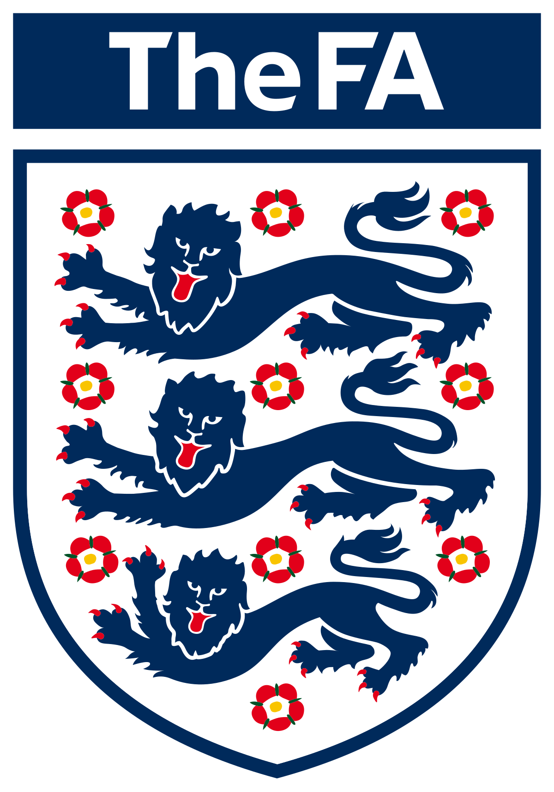
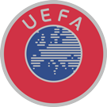

Historia del Manchester United
Manchester United fue fundado en 1878 como Newton Heath LYR (Lancashire and Yorkshire Railway). Como su nombre lo indica, estaba formado por trabajadores de una empresa ferroviaria. A principios del siglo XX, el club atravesaba una grave crisis financiera y parecía estar muy cerca de la bancarrota...
A principios del siglo XX, el club atravesaba una grave crisis financiera y parecía estar muy cerca de la bancarrota. Hasta que en 1902, John Henry Dawes, dueño de una fábrica de cerveza local, decidió invertir en el equipo a cambio de ciertos poderes para ejecutarlo, incluyendo el cambio de nombre a Manchester United Football Club.
Dos años después de conseguir el acceso a la élite del fútbol inglés, los Diablos Rojos fueron campeones de la Liga Premier en 1907/08, una hazaña que se repitió en la temporada 1910-1911. Bajo el mando del director escocés Matt Busby, el Manchester United se coronó campeón inglés en 1951-1952, terminando con una racha de más de 40 años sin un título importante. Busby también llevó al club a su primera Liga de Campeones de Europa en la temporada 1967/68 ante el Benfica (Portugal).
Otro entrenador de origen escocés escribió su historia en el estadio Old Trafford: Alex Ferguson. Fue contratado en 1986 y llevó al club a levantar 13 trofeos de la Premier League, los títulos de la Liga de Campeones de la UEFA en 1999 y 2008, y los títulos del Mundial de Clubes en 1999 y 2008.
En la época del Newton Heath, el club utilizó una camiseta verde y dorada, y con el tiempo adoptó el uniforme rojo y blanco. Actualmente, el "Home Kit" es rojo, blanco y negro. El escudo del Manchester United es rojo y amarillo, e incluye un diablo en el centro, símbolo del apodo "Diablos Rojos", además del Manchester Ship del escudo de la ciudad.
Bandera Oficial
La bandera del Manchester United representa la historia y tradición del club.
Equipo Histórico
Los legendarios jugadores que han vestido la camiseta de los Diablos Rojos.

Old Trafford
El Teatro de los Sueños, hogar del Manchester United desde 1910.
Nombre oficial
Manchester United Football Club
Federación
The Football Association - FA
Confederación
UEFA (Europa)
Datos del Club
Apodo: Red Devils (Diablos Rojos)
Fundación: 1878
Ciudad sede: Manchester
Estadio: Old Trafford
Estadio local: Old Trafford
Sitio oficial: www.manutd.com